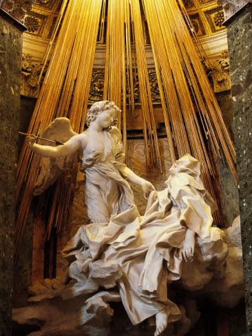
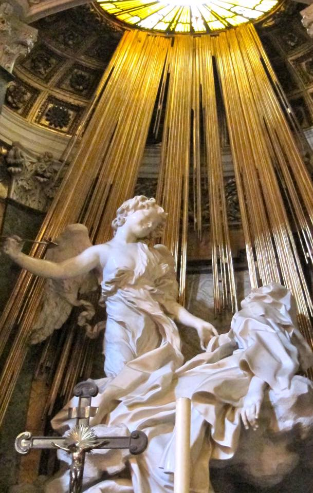
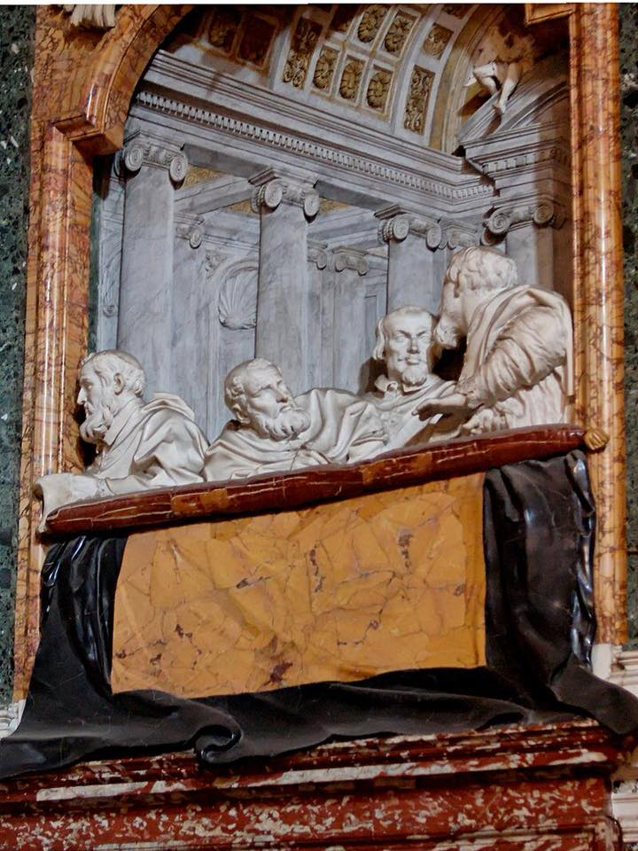

I’d never managed to see this extraordinary sculpture (The Ecstasy of Saint Teresa) on my previous visit to Rome so I was pleased to visit this masterpiece of the ‘Roman Baroque’ (designed and sculpted by Bernini in 1652 for the Venetian Cardinal Federico Cornaro who chose this church - Santa Maria della Vittoria - for his burial place). It’s really unworldly to see the swooning, erotic figure of the Carmelite Nun, Teresa of Avila, about to be pierced by the angel’s ‘long gold spear’ while she is in utter anguish. Meanwhile the side wall boxes feature 3D sculptures of the Cornaro family like they were an early-day Waldorf and Stadtler watching a variety show ...
One smart wag has commented that they "Just can’t see beyond the advert for spaghetti in the background" ...
a


